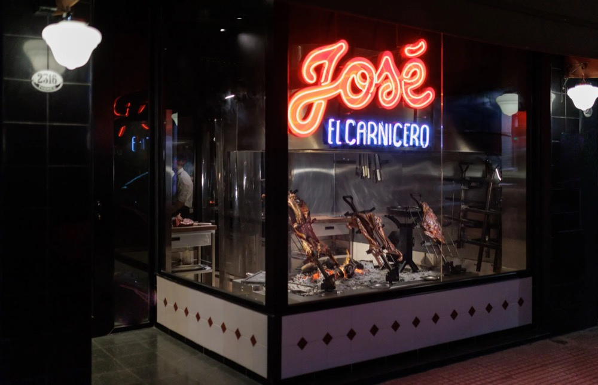

23
October · Friday
Arrival and the Team
9:45a
Land at EZE
A driver is confirmed for the airport pickup. Driver name and contact details are coming.
transfer10:00a
Early check-in at 10:00 AM is confirmed. Arroyo 841, Retiro, our base through Monday.
check-in
Before
Pre-tango cocktails at the bar. Alternative: Florería Atlántico, close to the hotel (confirm its opening time).
drinks
4:30p
Booked for 4, in Palermo Hollywood. About 4.5 miles (7 km) from the hotel, roughly 20 to 30 minutes by car.
showbooked
8:00p
Dinner for 4: Musgo
Open Fri 8 PM to 12 AM, +54 9 11 6407-3841. Backup: Nicky Harrison (open Fri and Sat 8 PM to 2 AM, +54 11 4831-0519). The booked itinerary holds Reliquia (alternative José El Carnicero); cancel once dinner is confirmed.
dinnerreserve
Other dinner options

Backup
4.6 stars from 3,033 reviews. Open Fri and Sat 8 PM to 2 AM. +54 11 4831-0519.

